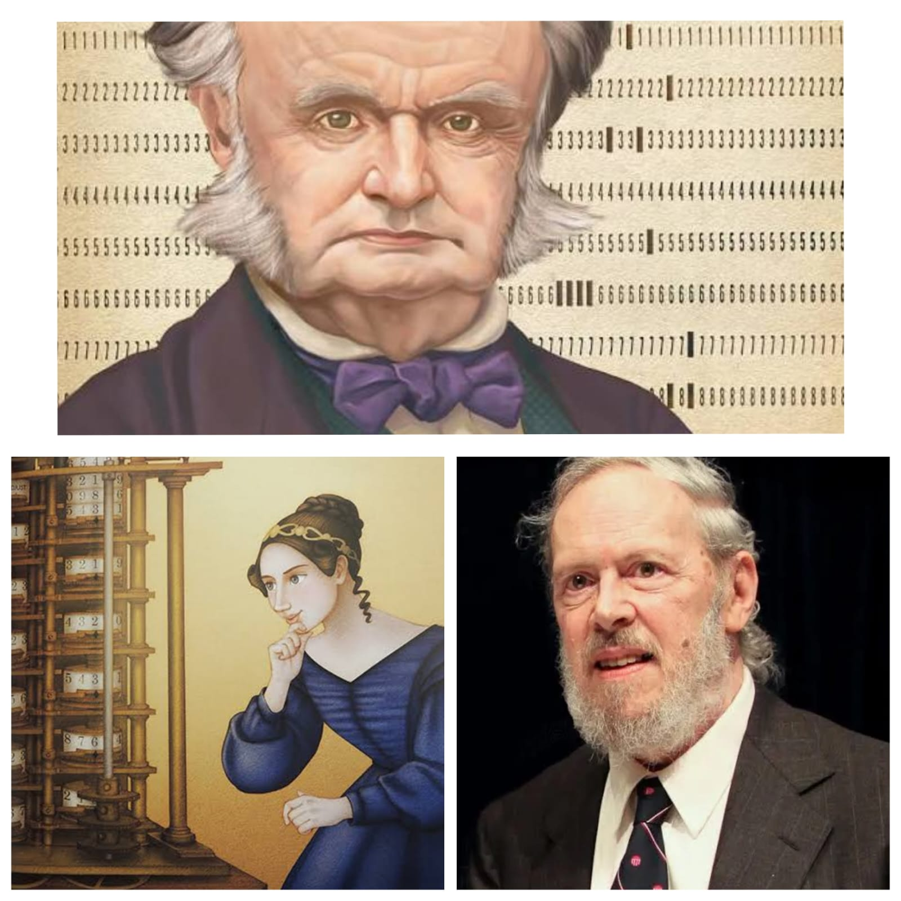

|
PERSONAJES
|

Charles Babbage (1791-1871) fue un matemático e ingeniero británico considerado el "padre de la computación".
Diseñó la Máquina Diferencial para calcular tablas matemáticas y luego la Máquina Analítica, un dispositivo mecánico con los principios de unidad aritmética, memoria y flujo condicional.
Aunque nunca construyó su máquina completamente, su concepto sentó las bases del computador moderno.
Ada Lovelace (1815-1852) hija del poeta Lord Byron y matemática por formación, colaboró estrechamente con Babbage. Es reconocida como la primera programadora de la historia, ya que escribió un algoritmo para la Máquina Analítica
que calculaba números de Bernoulli. En sus notas, también vislumbró que la máquina podría manipular símbolos más allá de los números, como la música o el arte.
Dennis Ritchie (1941-2011) fue un científico de la computación estadounidense creador del lenguaje C y co-creador del sistema operativo Unix.
En los laboratorios Bell, desarrolló C a principios de los 70, un lenguaje de alto nivel que combinaba eficiencia y portabilidad. Unix y C se convirtieron en pilares del software moderno, influyendo en sistemas como Linux, macOS, Windows e innumerables lenguajes posteriores.